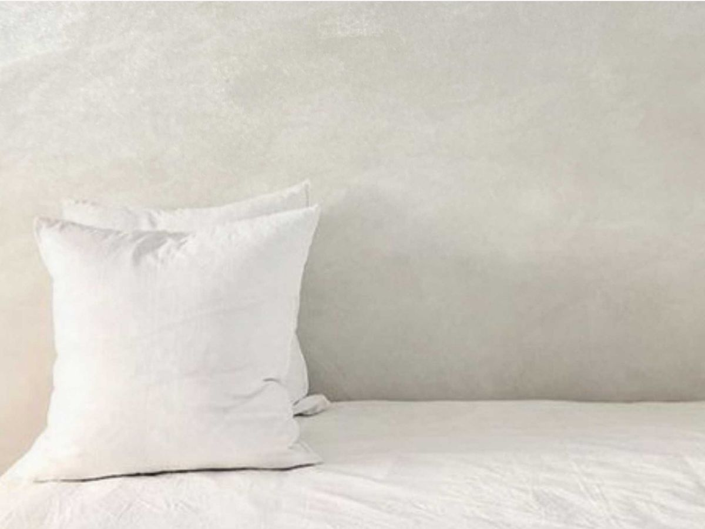
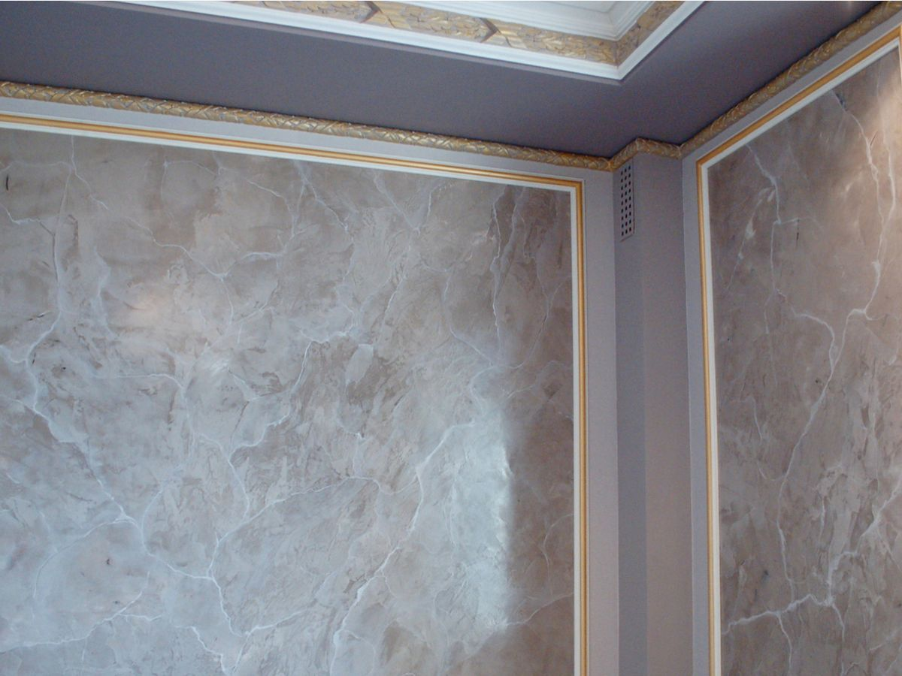
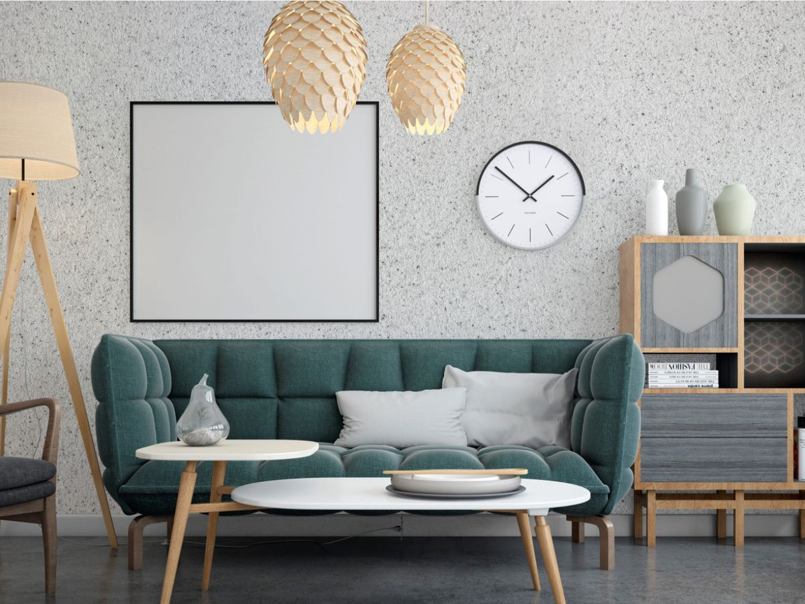
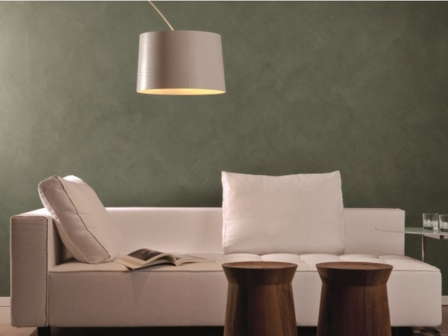
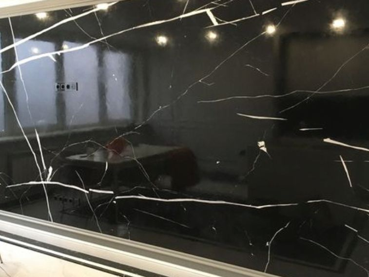
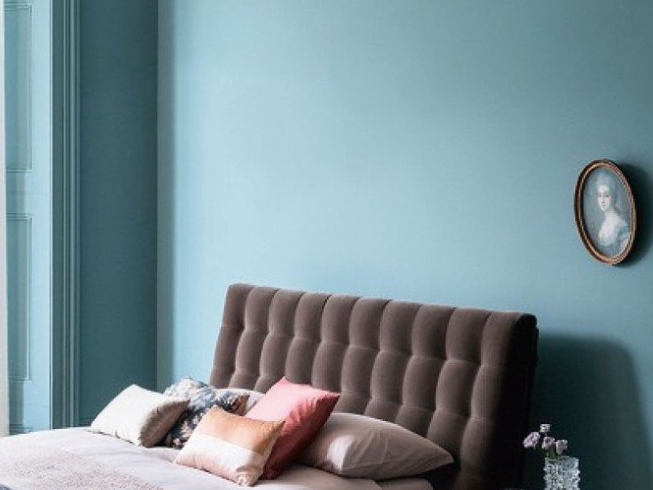

Декоративные покрытия NERO
Собственная коллекция студии: шёлковые и венецианские покрытия, рельефные штукатурки, декоративные краски, лессировки и грунты. У каждого продукта — описание, техники нанесения и характеристики из технического каталога.
Декоративные покрытия
Шёлк и перламутр, мрамор венецианской штукатурки, рельеф камня и бетона, бархат и кракелюр — фактуры, которые делают стену главным украшением комнаты.

Шёлковые покрытия
Перламутровые покрытия с эффектом мокрого шёлка, бархата, замши и песчаной бури. Мягкий перелив меняется вместе со светом в течение дня.
Nuovo Stile, Amaretto, Bella, Belleza, Sfumate, Ingrosso, Cristallo, Bonito Diamante, Luna Rossa, Notte Bianca, Tesoro

Венецианские штукатурки
Гладкая полированная поверхность с глубиной натурального мрамора и камня — от классики до марокканской штукатурки и кракелюра.
Terra, Laurenti, Aura

Декоративные штукатурки
Рельефные фактуры: гранит, травертин, бетон, состаренная стена и микроцемент. Для жилых комнат, санузлов и общественных пространств.
Stella, Del Vento, Fortuna, Fresco, Castello, Primavera, Primavera Acrilico, Grande, Vento, Avanti

Декоративные краски и спецэффекты
Бархатистая замша Velluto и кракелюрный лак Marte, который превращает стену в старинную поверхность с сеткой трещин.
Velluto, Marte
Лаки, воски и грунты
Всё, что до и после фактуры: грунты готовят основание, лессирующие покрытия, лаки и воски дают перламутр, глубину и защиту.

Лессирующие покрытия, лаки и воски
Перламутровые лессировки для патинирования фактур, матовые и глянцевые лаки, воски для венецианских штукатурок и защита с эффектом лотоса.
Notte, Ricco, Lacca Opaca, Lacca Lucida, Lacca Avere, Cera Belluno, Cera Tutti, Lacca Fuji

Грунты
Основа под декоративное покрытие: колеруемая краска-грунт, грунт глубокого проникновения и кварцевый грунт для рельефных фактур.
Fondo, Primer Profonda, Ruvido
Все продукты А–Я
Ничего не нашлось — попробуйте другое название.